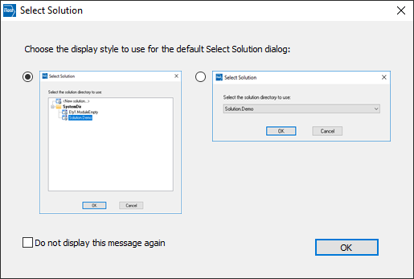
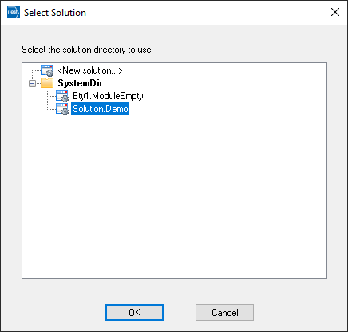
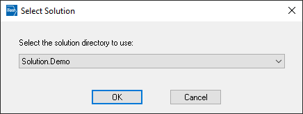
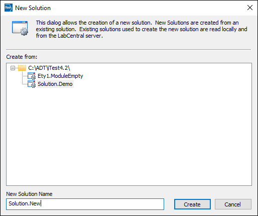
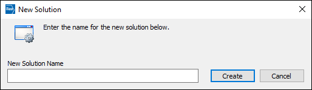

iTest User's Guide
The SelectSupport.exe application launches the Select Solution dialog, which is used to select a solution or module when first launching iTest. The Select Solution dialog contains a list of solution and module folders found in the $SYSTEMDIR. In addition, external solutions (i.e., solutions placed outside of the C:\ADT\iTestX.X folder) may be listed in this dialog; refer to the Selecting External Solutions documentation for more information.
 |
NOTE: | The SelectSupport config.ini setting must be set to TRUE for the Select Solution dialog to display. |
The display style for the Select Solution dialog is determined the first time you launch the application. You can specify the display style using the Select Default dialog. Note that you can check the Do not display this message again to skip selecting the display style in the future.
Select Default Dialog

In the first display style, you can perform one of the following options:
Select Solution Display 1

In the second display style, you can select one of the available solutions/modules listed. After clicking OK, the solution/module opens.
Select Solution Display 2

New solutions can be created using an existing solution or a ZIP file. By default, new solutions are placed under the $SYSTEMDIR; however, you can specify an external location for the new solution by adding SelectSupportExternalSolution=TRUE to the config.ini file. For more information, refer to the Selecting External Solutions documentation.
To create a new solution using an existing solution, select from the list of existing solutions in the New Solution dialog. Enter the new solution name, and then click Create. The new solution will be added to the list of solutions/modules in the Select Solution dialog.
New Solution Dialog - Existing Solution

To create a new solution using a ZIP file, set the ZIP file path using the NewSolutionZipPath config.ini setting (e.g., NewSolutionZipPath=$SYSTEMDIR\Installation\Solution.New.zip). For more information about the NewSolutionZipPath setting, refer to its description in the ConfigINI Options documentation. In the New Solution dialog you can enter a name for the new solution. After clicking Create, a copy of the solution from the ZIP file (with its new name) will be added to the list of solutions/modules in the Select Solution dialog.
|
NOTE: | This option is only available for non-BTS systems. For BTS systems, new solutions are created using Battery Wizard; refer to iTest.BTS's Battery Wizard documentation for more information. |
New Solution Dialog - ZIP File

The SelectSupport.exe application supports the /SolutionOpener switch. This switch allows you to launch an executable with a specific solution, including external solutions.
 |
WARNING: | In order to use the /SolutionOpener command, your working directory must be the $EXECUTEDIR. Otherwise, you may run into errors upon start up. |
Syntax:
SelectSupport.exe /SolutionOpener <Solution Location> <Application> SelectSupport.exe /SolutionOpener <Solution Location> "<Application> [argument1] ... [argumentn]"
Example:
C:\ADT\iTest4.3\Execute\SelectSupport.exe /SolutionOpener C:\ADT\iTest4.3\Solution.Demo AutomationPanel.exe C:\ADT\iTest4.3\Execute\SelectSupport.exe /SolutionOpener C:\ADT\iTest4.3\Solution.Demo "AutomationPanel.exe /readonly"
Parameters:
<Solution Location>: The fully-qualified path to the solution. The use of macros is not supported (e.g., $SYSTEMDIR).
<Application> [argument1] ... [argumentn]: The application to launch the solution (e.g., SolutionBuilder.exe) and any accompanying argument(s). If using arguments, the entire parameter must be surrounded by double-quotes.